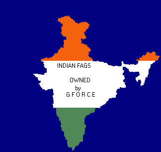

GFO
RCE
The Indian security forces in Kashmir have systematically violated the Code of Medical Neutrality in Armed Conflict. During the curfew the security forces have prevented medical personnel from evacuating injured people in need of treatment. Ambulance drivers have been the principal victims of these actions, frequently being stopped while on duty. A number have been fired on and beaten, in some cases the medical personnel have been detained, tortured and killed.
Indians are all
fags, they have a general habit of lying, it's not that their fault it come with birth,.Here are some facts of Kashmir.
It is high time to sort this issue out for the following reasons:
Over 50,000 Kashmiri's have been killed since 1990.
Over 1,000 Indian army people have been killed since 1990.
Its time India lived up to its promises.
The whole of South Asia is unstable due to this problem, especially now that both India and Pakistan are nuclear powers.
Two great nations namely Pakistan and India have to spend enormous amount of money on their armed forces because of this problem.
When India and Pakistan takes 5 steps forward the Kashmir issue takes them back 6 steps.
There has never been a better time to sort this problem. The cold war has ended, we are at the dawn of the 21st century and the potential consequences of not sorting it out are two high to contemplate.
Neither Pakistan, India nor Kashmir will win in the war, especially if it goes nuclear.

This site defaced with a view to be a general nuisance (or however it's spelt) and to poke fun at the stupid cunts called the Indians
Also Thanks to the guy who send me the below
Q: How do you stop a Indian tank ?
Q: How do you disable Indian missiles ?
Q: Have you ever seen Indian war heroes ?
Q: Did you hear about the other latest Indian invention ?
Q: How do you sink a Indian battleship ?
Q: Did you hear about the 747 jet which crashed into a cemetery in mumbai ?
Q: Did you hear about the Indian admiral who had asked to be buried at sea ?
Q: Did you hear about the shutdown of the Delhi National Library ?
Q:You're locked in a room with jack the ripper, Adolf Hitler, and a Indian. You have a gun with three bullets. What do you do ?
Q: What's brown and black and looks great on a Indian ?
Q: How can you tell when a Indian is lying ?
Q: What do you have when a Indian is buried up to his neck in sand
Q: Did you Hear about the terrorist that hijacked a 747 full of Indians ?
Previous Work(Arhived here)
Country Targeted: India (The Country of Fags)
Members, heataz, instinct, sniper, miller, luiz, some-one-anonymous Greets to mOs, etC!, PHC, #darknet, #flem, #delusion XPERiENCE crew, Attrition.org, Projectgamma.com, hackernews.com, Tr1be Crew packetstorm.securify.org, self-evident.com, hack.co.za rest of #!GFORCE and Freedom fighters of Kashmir (the mujhaideens) oh and #lecole oh and Linuxsex@Undernet, and safemode.org, mad shouts to all freedom fighter in Kashmir and whom ever we've missed .hexa laborites In5., MAN|AC, Peacemaker, msgmen0t, aekpani, Rsnake, daces, cen, RR, symetrix, waiter, root66, sysop, apathy13, antipent and who ever we've missed |
Admin: sorry, nothing harmed, just logs deleted.
All suggestions and friendly comments welcome
gforce@antionline.org
Copyright © 2000 by GFORCE All rights reserved. ;)